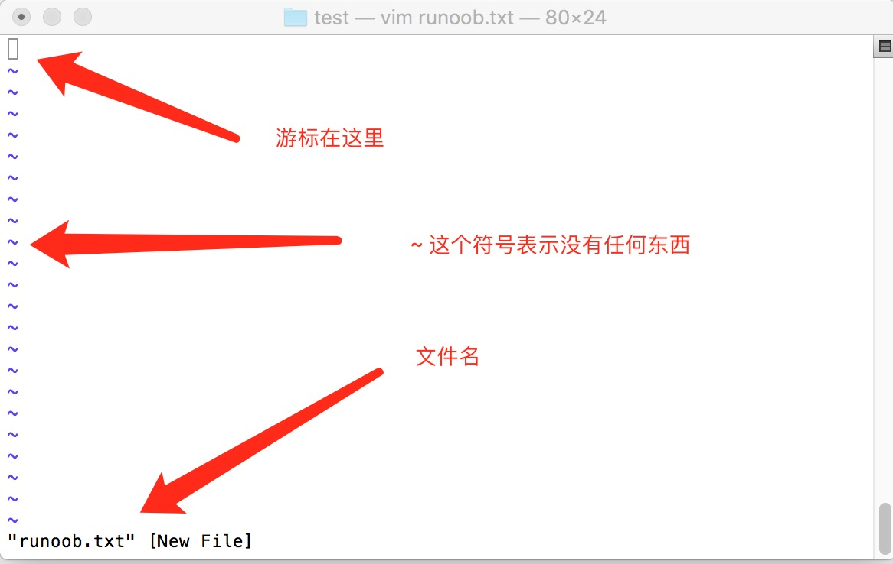
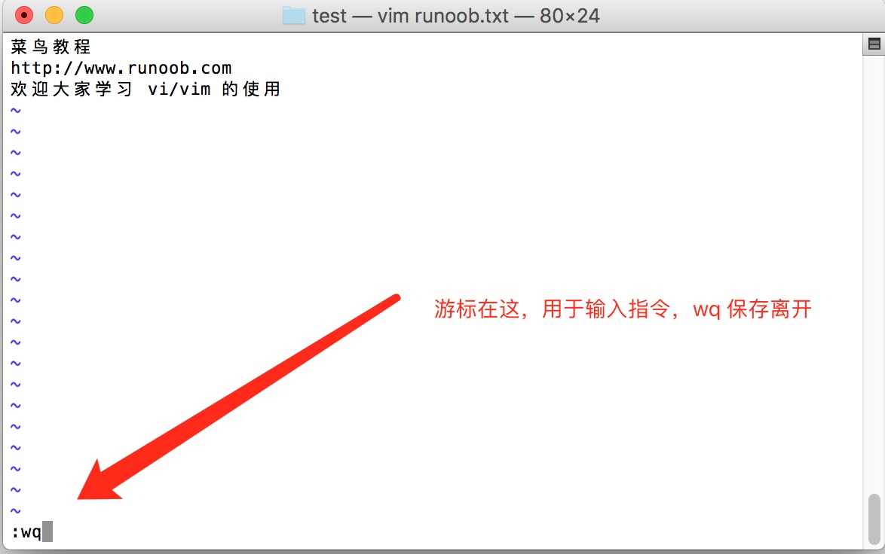

Linux vi/vim
Todos los sistemas tipo Unix incluyen el editor de texto vi, mientras que otros editores de texto pueden no existir.
Pero actualmente usamos más el editor vim.
vim tiene capacidad de edición de programas; puede distinguir activamente la corrección de la sintaxis mediante el color de la fuente, lo que facilita el diseño de programas.
Artículos relacionados:El mapa de atajos de teclado de Vim más completo: de principiante a avanzado
¿Qué es vim?
Vim es un editor de texto desarrollado a partir de vi. Tiene funciones especialmente abundantes para facilitar la programación, como autocompletado de código, compilación y salto a errores, y es ampliamente utilizado entre programadores.
En pocas palabras, vi es un procesador de textos antiguo, aunque sus funciones ya son bastante completas, todavía tiene margen de mejora. vim puede considerarse una herramienta muy útil para desarrolladores de programas.
Incluso el sitio web oficial de vim (https://www.vim.org/) también dice que vim es una herramienta de desarrollo de programas, no un software de procesamiento de textos.
Mapa de teclado de vim
↑ Haz clic en cualquier tecla para ver la descripción detallada y ejemplos de uso
Uso de vi/vim
Básicamente, vi/vim se divide en tres modos:Modo de comandos (Command Mode), modo de inserción (Insert Mode) y modo de línea de comandos (Command-Line Mode)。
Modo de comandos
Cuando el usuario acaba de iniciar vi/vim, entra en el modo de comandos.
En este estado, las pulsaciones de teclado son reconocidas por Vim como comandos, no como caracteres de entrada. Por ejemplo, si pulsamosi, no se introduce un carácter,ise trata como un comando.
A continuación se muestran algunos comandos comunes del modo normal:
- i-- Cambia al modo de inserción, comenzando a introducir texto en la posición actual del cursor.
- x-- Elimina el carácter en la posición actual del cursor.
- :-- Cambia al modo de línea de comandos, para introducir comandos en la línea inferior.
- a-- Entra en el modo de inserción, comenzando a introducir texto en la posición siguiente al cursor.
- o: Inserta una nueva línea debajo de la línea actual y entra en el modo de inserción.
- O-- Inserta una nueva línea encima de la línea actual y entra en el modo de inserción.
- dd-- Corta la línea actual.
- yy-- Copia la línea actual.
- p(minúscula) -- Pega el contenido del portapapeles debajo del cursor.
- P(mayúscula) -- Pega el contenido del portapapeles encima del cursor.
- u-- Deshace la última operación.
- Ctrl + r-- Rehace la última operación deshecha.
- :w-- Guarda el archivo.
- :q-- Sale del editor Vim.
- :q!-- Fuerza la salida del editor Vim sin guardar los cambios.
Si quieres editar texto, solo tienes que iniciar Vim, entrar en el modo de comandos y pulsaripara cambiar al modo de inserción.
El modo de comandos solo tiene algunos comandos básicos, por lo que todavía hay que recurrir almodo de línea de comandospara introducir más comandos.
Modo de inserción
En el modo de comandos, al pulsarise entra en el modo de inserción; usandoEscla tecla se puede volver al modo normal.
En el modo de inserción, se pueden usar las siguientes teclas:
- Teclas de caracteres y combinaciones con Shift, introducen caracteres
- ENTER, tecla Enter, salto de línea
- BACK SPACE, tecla de retroceso, elimina el carácter anterior al cursor
- DEL, tecla Suprimir, elimina el carácter posterior al cursor
- Teclas de dirección, mueven el cursor por el texto
- HOME/END, mueven el cursor al inicio/fin de la línea
- Page Up/Page Down, página arriba/abajo
- Insert, alternan el cursor entre modo inserción/reemplazo; el cursor se convierte en una línea vertical/guion bajo
- ESC, salen del modo de inserción y cambian al modo de comandos
Modo de línea de comandos
En el modo de comandos, al pulsar:(dos puntos en inglés) se entra en el modo de línea de comandos.
En el modo de línea de comandos se pueden introducir comandos de uno o varios caracteres; hay muchísimos comandos disponibles.
En el modo de línea de comandos, los comandos básicos son (ya se han omitido los dos puntos):
:w: Guarda el archivo.:q: Sale del editor Vim.:wq: Guarda el archivo y sale del editor Vim.:q!: Fuerza la salida del editor Vim sin guardar los cambios.
按 ESCLa tecla Esc se puede usar para salir del modo de línea de comandos en cualquier momento.
En pocas palabras, podemos representar estos tres modos con los siguientes iconos:

Ejemplos de uso de vi/vim
Entrar en el modo normal usando vi/vim
Si quieres usar vi para crear un archivo llamado runoob.txt, puedes hacer lo siguiente:
$ vim runoob.txt
Simplemente escribevi nombre_del_archivoy así entrarás en el modo normal de vi. Ten en cuenta que después de vi siempre debe ir un nombre de archivo, exista o no.

Pulsa i para entrar en el modo de inserción (también llamado modo de edición) y comienza a editar texto
En el modo normal, basta con pulsar caracteres como i, o, a para entrar en el modo de inserción.
En el modo de edición, puedes ver que en la barra de estado de la esquina inferior izquierda aparece la indicación –INSERT-, que es la señal de que puedes introducir cualquier carácter.
En este momento, en el teclado, aparte deEscesta tecla, todas las demás teclas pueden considerarse botones normales de entrada, por lo que puedes realizar cualquier edición.

Pulsa la tecla ESC para volver al modo normal
Bien, supongamos que ya he terminado de editar según el formato anterior; ¿cómo salir? ¡Sí! ¡Exacto! Solo tienes que pulsarEsceste botón. Inmediatamente verás que – INSERT – en la esquina inferior izquierda desaparece.
En el modo normal, pulsa:wqGuardar y salir de vi
OK, vamos a guardar. La orden para guardar y salir es muy sencilla: escribe:wqy ¡se guardará y saldrá!

¡OK! Así hemos creado con éxito un archivo runoob.txt.
Explicación de las teclas de vi/vim
Además de i, Esc, :wq del ejemplo sencillo anterior, en realidad vim tiene muchísimas más teclas que se pueden usar.
Primera parte: movimiento del cursor, copiar y pegar, buscar y reemplazar, etc., disponibles en el modo normal
| Métodos para mover el cursor | |
|---|---|
| h o tecla de flecha izquierda (←) | Mueve el cursor un carácter a la izquierda |
| j o tecla de flecha abajo (↓) | Mueve el cursor un carácter hacia abajo |
| k o tecla de flecha arriba (↑) | Mueve el cursor un carácter hacia arriba |
| l o tecla de flecha derecha (→) | Mueve el cursor un carácter a la derecha |
| Si colocas la mano derecha sobre el teclado, notarás que hjkl están juntos, por lo que puedes usar estos cuatro botones para mover el cursor. Si deseas realizar varios movimientos, por ejemplo bajar 30 líneas, puedes usar la combinación "30j" o "30↓", es decir, añade el número de veces (cantidad) deseado y luego pulsa la acción. | |
| [Ctrl] + [f] | La pantalla se mueve 'hacia abajo' una página, equivalente a la tecla [Page Down] (común) |
| [Ctrl] + [b] | La pantalla se mueve 'hacia arriba' una página, equivalente a la tecla [Page Up] (común) |
| [Ctrl] + [d] | La pantalla se mueve 'hacia abajo' media página |
| [Ctrl] + [u] | La pantalla se mueve 'hacia arriba' media página |
| + | El cursor se mueve al primer carácter que no sea un espacio de la línea siguiente |
| - | El cursor se mueve al primer carácter que no sea un espacio de la línea anterior |
| n<space> | Ese n representa un "número", por ejemplo 20. Después de pulsar el número, pulsa la barra espaciadora; el cursor se moverá n caracteres a la derecha en esa línea. Por ejemplo, 20<space> mueve el cursor 20 caracteres hacia adelante. |
| 0 o la tecla de función [Home] | Este es el número "0": mueve el cursor al primer carácter de esta línea. (común) |
| $ o la tecla de función [End] | Mueve el cursor al último carácter de esta línea. (común) |
| H | Mueve el cursor al primer carácter de la línea superior de esta pantalla. |
| M | Mueve el cursor al primer carácter de la línea central de esta pantalla. |
| L | Mueve el cursor al primer carácter de la línea inferior de esta pantalla. |
| G | Mueve a la última línea de este archivo. (común) |
| nG | n es un número. Mueve a la línea n de este archivo. Por ejemplo, 20G mueve a la línea 20 de este archivo (se puede combinar con :set nu). |
| gg | Mueve a la primera línea de este archivo, ¡equivale a 1G! (común) |
| n<Enter> | n es un número. Mueve el cursor n líneas hacia abajo. (común) |
| Buscar y reemplazar | |
| /word | Busca una cadena llamada word debajo del cursor. Por ejemplo, para buscar la cadena vbird en el archivo, ¡basta con escribir /vbird! (común) |
| ?word | Busca una cadena llamada word encima del cursor. |
| n | Esta n es una tecla de letra inglesa. Significa repetir la acción de búsqueda anterior. Por ejemplo, si acabamos de ejecutar /vbird para buscar hacia abajo la cadena vbird, al pulsar n se seguirá buscando hacia abajo la siguiente cadena llamada vbird. Si se ejecutó ?vbird, entonces al pulsar n se buscará hacia arriba la cadena llamada vbird. |
| N | Esta N es una tecla de letra inglesa. Es exactamente lo contrario de n; realiza la búsqueda anterior en dirección "inversa". Por ejemplo, después de /vbird, pulsar N significa buscar vbird "hacia arriba". |
| Usar /word junto con n y N es muy útil. ¡Te permite encontrar repetidamente algunas de las palabras clave que buscas! | |
| :n1,n2s/word1/word2/g | n1 y n2 son números. Entre las líneas n1 y n2 busca la cadena word1 y reemplázala por word2. Por ejemplo, para buscar vbird entre las líneas 100 y 200 y reemplazarla por VBIRD, se hace: ':100,200s/vbird/VBIRD/g'. (común) |
| :1,$s/word1/word2/g 或 :%s/word1/word2/g | Busca la cadena word1 desde la primera línea hasta la última línea y reemplázala por word2. (común) |
| :1,$s/word1/word2/gc 或 :%s/word1/word2/gc | Busca la cadena word1 desde la primera línea hasta la última línea, y reemplázala por word2. Además, antes de reemplazar muestra un aviso al usuario para confirmar si se debe reemplazar. (común) |
| Borrar, copiar y pegar | |
| x, X | En una línea de texto, x borra un carácter hacia delante (equivale a la tecla [del]); X borra un carácter hacia atrás (equivale a [backspace], es decir, la tecla de retroceso). (común) |
| nx | n es un número. Borra n caracteres consecutivos hacia delante. Por ejemplo, para borrar 10 caracteres consecutivos, usa '10x'. |
| dd | Corta toda la línea donde está el cursor (común); se puede pegar con p/P. |
| ndd | n es un número. Corta n líneas hacia abajo desde la posición del cursor; por ejemplo, 20dd corta 20 líneas (común). Se puede pegar con p/P. |
| d1G | Borra todos los datos desde la posición del cursor hasta la primera línea. |
| dG | Borra todos los datos desde la posición del cursor hasta la última línea. |
| d$ | Borra desde la posición del cursor hasta el último carácter de esa línea. |
| d0 | Ese es el número 0; borra desde la posición del cursor hasta el primer carácter de esa línea. |
| yy | Copia la línea donde está el cursor. (común) |
| nyy | n es un número. Copia n líneas hacia abajo desde la posición del cursor; por ejemplo, 20yy copia 20 líneas. (común) |
| y1G | Copia todos los datos desde la línea del cursor hasta la primera línea. |
| yG | Copia todos los datos desde la línea del cursor hasta la última línea. |
| y0 | Copia todos los datos desde el carácter donde está el cursor hasta el principio de esa línea. |
| y$ | Copia todos los datos desde el carácter donde está el cursor hasta el final de esa línea. |
| p, P | p pega los datos copiados en la línea siguiente al cursor; P los pega en la línea anterior al cursor. Por ejemplo, si el cursor está en la línea 20 y ya has copiado 10 líneas de datos, al pulsar p, esas 10 líneas se pegarán después de la línea 20 original, es decir, comenzarán a pegarse a partir de la línea 21. Pero si pulsas P, la línea 20 original será empujada y se convertirá en la línea 30. (común) |
| J | Combina la línea donde está el cursor con la línea siguiente en una misma línea. |
| c | Repite el borrado de varios datos; por ejemplo, para borrar 10 líneas hacia abajo, [10cj]. |
| u | Deshace la acción anterior. (común) |
| [Ctrl]+r | Rehace la acción anterior. (común) |
| Estas órdenes u y [Ctrl]+r son muy utilizadas. Una es deshacer y la otra es rehacer. Con estas dos teclas de función, tu edición, jeje, ¡será muy agradable! | |
| . | ¡No lo dudes! Este es el punto decimal. Significa repetir la acción anterior. Si quieres repetir borrados, pegados, etc., ¡basta con pulsar el punto '.'! (común) |
Segunda parte: explicación de las teclas disponibles para cambiar del modo normal al modo de edición
| Entrar en el modo de edición de inserción o reemplazo. | |
|---|---|
| i, I | Entrar en el modo de inserción (Insert mode): i es "insertar desde la posición actual del cursor"; I es "comenzar a insertar en el primer carácter que no sea un espacio de la línea actual". (común)) |
| a, A | Entrar en el modo de inserción (Insert mode): a es "comenzar a insertar desde el siguiente carácter a la posición actual del cursor"; A es "comenzar a insertar desde el último carácter de la línea donde está el cursor". (común)) |
| o, O | Entrar en el modo de inserción (Insert mode): Estas son las letras o y O del alfabeto inglés. o inserta una nueva línea debajo de la línea donde está el cursor; O inserta una nueva línea encima de la línea donde está el cursor. (común)) |
| r, R | Entrar en el modo de reemplazo (Replace mode): r reemplaza solo una vez el carácter donde está el cursor; R reemplaza continuamente el texto desde el cursor hasta que se pulse ESC. (común)) |
| Entre estas teclas, en la esquina inferior izquierda de la pantalla de vi aparecerán las palabras '--INSERT--' o '--REPLACE--'. ¡Por el nombre sabrás de qué acción se trata! Ten en cuenta, como mencionamos antes, que para insertar caracteres en el archivo debes ver INSERT o REPLACE en la esquina inferior izquierda. | |
| [Esc] | Salir del modo de edición y volver al modo normal. (común)) |
Tercera parte: explicación de las teclas disponibles para cambiar del modo normal al modo de línea de comandos
| Órdenes de guardado, salida, etc. en la línea de comandos. | |
|---|---|
| :w | Guarda los datos editados en el archivo del disco. (común)) |
| :w! | Si el atributo del archivo es "solo lectura", fuerza la escritura en ese archivo. Sin embargo, si realmente se puede escribir depende de los permisos que tengas sobre ese archivo. |
| :q | Salir de vi (común)) |
| :q! | Si has modificado el archivo pero no quieres guardarlo, usa ! para forzar la salida sin guardar el archivo. |
| Ten en cuenta que el signo de exclamación (!) en vi suele tener el significado de "forzar". | |
| :wq | Guardar y salir; si es :wq!, es guardar y salir forzadamente. (común)) |
| ZZ | ¡Esta es una Z mayúscula! Si has modificado el archivo, guarda el archivo actual y luego sal. El efecto equivale a (guardar y salir). |
| ZQ | No guardar y forzar la salida. El efecto equivale a:q!。 |
| :w [filename] | Guarda los datos editados como otro archivo (similar a guardar como). |
| :r [filename] | Lee en los datos editados el contenido de otro archivo. Es decir, añade el contenido del archivo 'filename' después de la línea donde está el cursor. |
| :n1,n2 w [filename] | Guarda el contenido desde n1 hasta n2 como el archivo filename. |
| :! command | Salir temporalmente de vi al modo de línea de comandos para ejecutar y mostrar el resultado de command. Por ejemplo ':! ls /home' permite ver en vi la información de los archivos en /home que muestra ls. |
| Cambios en el entorno de vim. | |
| :set nu | Muestra los números de línea; después de configurarlo, se mostrará el número de línea al principio de cada línea. |
| :set nonu | Lo contrario de set nu, es decir, cancela los números de línea. |
Presta especial atención: en vi/vim, los números son muy significativos. Un número suele representar cuántas veces se repite una acción. También puede representar ir a la enésima posición de algo.
Por ejemplo, para borrar 50 líneas, se usa '50dd', ¿verdad? El número se antepone a la acción. Si quiero moverme 20 líneas hacia abajo, basta con '20j' o '20↓'.
Otras extensiones
荣书
zrs***07@163.com
Añadir comentarios en lote en vim
Método 1: modo de selección en bloque
Comentar en lote:
Ctrl + vEntra en el modo de selección de bloque, luego mueve el cursor para seleccionar las líneas que quieres comentar y, a continuación, pulsa la letra mayúsculaIEntra en el modo de inserción al inicio de línea y escribe el símbolo de comentario, como// 或 #, una vez introducido, pulsa dos vecesESC，VimAñadirá automáticamente el comentario al inicio de todas las líneas seleccionadas; guarda y sal para terminar de comentar.
Descomentar:
Ctrl + vEntra en el modo de selección de bloque, selecciona los símbolos de comentario al inicio de las líneas que quieres eliminar; ten en cuenta//que debes seleccionar dos; después de seleccionarlos, pulsadpara eliminar los comentarios,ESCguarda y sal.
Método 2: comando de sustitución
Comentar en lote.
Usa el siguiente comando para añadir comentarios al inicio de las líneas especificadas.
Usa el formato de comando::línea_inicio,línea_fins/^/símbolo_comentario/g(ten en cuenta los dos puntos).
Descomentar:
Usa el formato de comando::línea_inicio,línea_fins/^símbolo_comentario//g(ten en cuenta los dos puntos).
Ejemplo:
1. En las líneas 10 - 20 añade//comentarios
2. En las líneas 10 - 20 elimina//comentarios
3. En las líneas 10 - 20 añade#comentarios
4. En10 - 20las líneas elimina los comentarios #
荣书
zrs***07@163.com
playful_clown
yun***y@qq.com
Atajos de vim adicionales (modo inserción)
Atajos de vim adicionales (modo edición)
Atajos de vim adicionales (comunes al modo inserción y edición)
playful_clown
yun***y@qq.com
啦啦啦种太阳
edo***d@163.com
Está muy bien escrito; añadiré un poco: en vim se puede saltar entre documentos
En modo comando, coloca el cursor sobre la ruta de un documento. (En este momento, el documento no debe haber sido modificado)
gf : salta al documento indicado por la ruta
ctrl + o : regresa al documento original
啦啦啦种太阳
edo***d@163.com